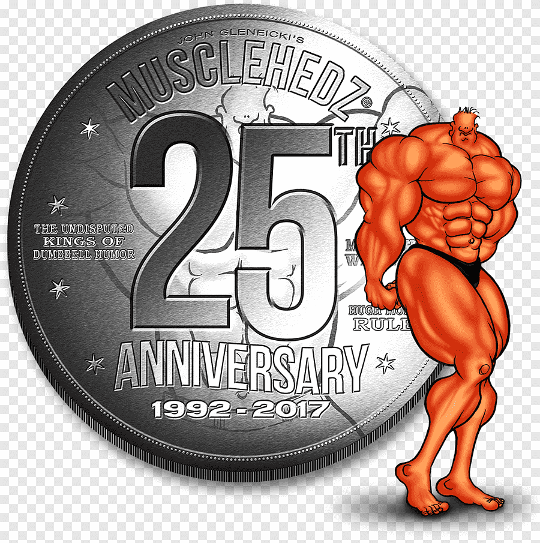

fisicoculturismo
HISTORIA
en Egipto y durante la Grecia antigua, el cuidado del cuerpo y mantenerse en forma era una obligación social. La perfección física externa se consideraba reflejo de rectitud moral, era señal de valor interior. Así se representaban las esculturas: hombros anchos, cinturas estrechas y muslos potentes, siempre cuidando las proporciones al máximo. Esto sentaría las bases de la civilización occidental. En la mitología griega encontramos varios personajes significativos como Hércules, quien su extraordinaria fuerza es su principal atributo o Milón de Crotona, alumno del matemático Pitágoras (¿Quién no recuerda el “teorema de Pitágoras” del cole?) quién decidió ser el hombre más fuerte del mundo, emprendiendo el trabajo de levantar y cargar un ternero todos los días hasta convertirse en un toro. El culto al cuerpo tenía en los Juegos Olímpicos, que comenzaron en el 776 a.c, uno de sus máximos exponentes. Olimpia fue uno de los centros olímpicos más importantes. Los atletas que triunfaban tenían un prestigio que les acercaba a los dioses (por ejemplo la estatua del Discóbolo de Miron). A los 12 años, los niños ingresaban en la palestra donde desarrollaban su musculatura y a los 16 entraban en el gimnasio para realizar diferentes ejercicios físicos. El levantamiento de pesos ya era la clave para tal menester, pero claro, levantaban en vez de mancuernas y barras, troncos pesados y piedras. Siguiendo la línea del tiempo, los países del este siempre han sido pioneros en levantamiento de pesos, ya sea con el Powerlifting, las giryas o kettlebells….y por lo tanto, en desarrollar unos cuerpos voluminosos e hipertrofiados, aunque no siempre definidos. Lo importante era la fuerza, pero no tanto la simetría, por eso podemos ver a numerosos personajes de la época con físicos imponentes pero con estómagos hinchados. Pero todo cambia cuando entra en escena, el padre del culturismo, EUGEN SANDOW, nacido en 1867 (Rusia). Su obsesión por construir un físico siguiendo las proporciones de las estatuas griegas lo coronó como la primera persona en desarrollar intencionadamente su musculatura hacia unas medidas predeterminadas, con el fin de mostrarlas al resto, y ésta fue la diferencia con el pasado, ya que hasta el momento, levantar pesos era una cuestión de “estar más fuerte”, pero ahora le tocaba el turno al exhibicionismo. Escribió libros sobre culturismo y nutrición, apareció en películas, comercializó equipos de gimnasia caseros y actuaba en diversas representaciones itinerantes por toda Europa y América, demostrando su fuerza y su cuerpo escultórico, pero lo que lo coronó como personaje influyente de la historia fue la organización del primer concurso de culturismo en el 1901 en Londres “The Great Competition” y fue el impulsor de la “pose” que se utiliza en este deporte. A partir de este momento, se empezó a comercializar con barras con pesos, mancuernas….y todo el material que conocemos hoy en día. Un dato importante es que Joseph Pilates, contemporáneo a Eugen Sandow, admiraba a este último y basó el método Pilates en construir un cuerpo armónico desde el centro, una de las bases del culturismo (a los amantes de este deporte os recomiendo leer Tudor O.Bompa): antes de fortalecer extremidades, hay que fortalecer el centro. Más adelante en el tiempo, a partir de la década de 1940, el fisicoculturismo empieza a hacerse popular, durante la llamada “Edad de oro del culturismo” donde empiezan a aparecer revistas especializadas de este deporte, pequeñas intervenciones en el cine de algunos culturistas famosos, aparecen las primeras competiciones como el “Mr.América” (establecida por la AAU, Amateur Athletic Union), el “Mr.Universe” (1950, Inglaterra, por la NABBA-National Amateur Bodybuilders Association), el “Mr. Olympia” (1967, América, por la IFBB-Federación Internacional de Fisicoculturismo), la WABBA (World Amaterur Body Building Association)…
MR OLYMPIA
Mister Olympia es una competición de culturismo profesional que se celebra anualmente y alberga a los mejores culturistas de todo el mundo. Organizada por la International Federation of BodyBuilding & Fitness (IFBB). Desde sus inicios se le considera la competición con mayor nivel y la que dilucida al mejor culturista del mundo. Los competidores que compiten en este certamen salen de una exigente clasificación previa. Aquellos 20 primeros clasificados del Olympia del año anterior o del Arnold Classic del mismo año, los 10 primeros del Ironman, los 5 primeros de cada una de las competiciones profesionales del calendario o el primer clasificado del campeonato del Mundo Master profesional. Además los que han sido Mr. Olympia tienen el derecho de por vida de poder clasificar. Esta competición fue creada en 1965 por Joe Weider para mantener a todos los campeones de Mr. Olympia activos en el deporte y para darles la oportunidad de ganar dinero por competir. Es decir, es el sitio donde solo los campeones pueden acudir, actualmente los campeones del mundo amateur han agotado sus posibilidades de competir en el mundo amateur y han de dar el salto al profesionalismo. La primera competición de Mister Olympia se celebró el 18 de septiembre de 1965 y el vencedor fue Larry Scott (quien también ganó al año siguiente). Debido a que era un deporte minoritario las recaudaciones monetarias fueron insignificantes y el vencedor sólo recibió 1.000 dólares.
